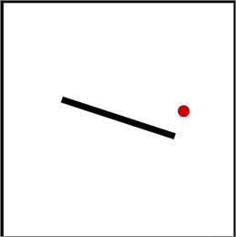
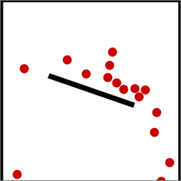
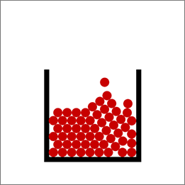
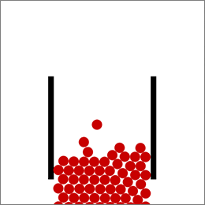
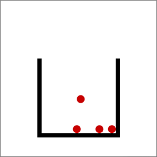

物理シュミレーションライブラリFisica
現実世界で物理法則に従って物が落下したり衝突したりするように、Processing画面上に描かれた「物体」の動きをシュミレーションする機能を提供するのが物理エンジン、あるいは物理場シュミレーションと呼ばれるライブラリです。Processing用のライブラリにFiscaがあります。Box2Dという物理エンジンのJava版をProcessingのライブラリ化したものです。Fisica
Fisicaライブラリは、次のようにインポートできます。メニュー[スケッチ][ライブラリをインポート][ライブラリ-を追加]で、Fisicaを選択して、インストールします。インストールすると、サンプルのContribute Librariesの中にサンプルが入るので、サンプルを動かして、機能を実験することができます。詳しくは、 FisicaのAPIを参照。 物理場に置く「物体」(FBodyクラス)にはさまざまな値を設定するためのメソッドが用意されています。下はその一部です。
- 位置: setPosition
- 速度: setVelocity
- 反発係数: setRestitution
- 摩擦係数: setFriction
- 回転角度: setRotation
- 静止物体かどうか: setStatic
ボールが落ちるサンプル
Processingのスケッチで、Fisicaの物体を物理場において運動のシュミレーションを実行するには次のようにします。- (1) ライブラリのインポート
import fisica.*;
- (2) FWorldオブジェクト用変数の定義
FWorld world;
- (3) ライブラリの初期化（setup()の中）
Fisica.init(this);
- (4) FWorldオブジェクトの生成（setup()の中）。必要に応じて、境界や重力を設定。
world = new FWorld(); //場の生成 world.setEdges(); //画面の端に境界を置く
- (5) 物理場に置くFBodyクラスのサブクラスのオブジェクトを生成し、必要に応じて、値を設定する。
FBox bbox; bbox = new FBox(200, 10); //箱 bbox.setPosition(width/2, height/2);//箱の位置 bbox.setRotation(PI/10);//箱の回転 bbox.setFill(0);//箱の色 bbox.setStatic(true);//箱は落ちない
- (6) シュミレーションを実行（draw()の中）
world.step();
- (7) オブジェクトを描画（draw()の中）
world.draw();

【リストA2-1】
import fisica.*; //(1)ライブラリをインポート
FWorld world; //(2) FWorldオブジェクト用変数の定義
FBox bbox;
FCircle ball;
void setup() {
size(400, 400);
Fisica.init(this); //(3)物理場の初期化
world = new FWorld(); //(4)場の生成
world.setEdges(); //(4)画面の端に境界を置く
world.remove(world.bottom); //(4)下だけ境界を外す
//(5)箱を置く
bbox = new FBox(200, 10); //下線
bbox.setPosition(width/2, height/2);//箱の位置
bbox.setRotation(PI/10);//箱の回転
bbox.setFill(0);//箱の色
bbox.setStatic(true);//箱は落ちない
world.add(bbox);
//(5)ボールを置く
ball = new FCircle(20); //ボールの生成
ball.setPosition(width/2-50, 0); //ボールの位置
ball.setVelocity(random(-100, 100), 200); //ボールの速度
ball.setRestitution(0.8); //ボールの反発
ball.setFillColor(color(200, 0, 0)); //ボールの色
ball.setNoStroke();
world.add(ball);
}
void draw() {
background(255);
world.step(); //(6)シュミレーション実行
world.draw(); //(7)オブジェクトを描画
}
マウス操作で物体が増えるサンプル
リストA2-2はマウス押下でボールが増えるサンプルです。FCircleオブジェクトはマウスが押されるごとに生成され、その数は不定です。前もって個数がわからないので、FCircleオブジェクトのデータの列を扱うためにArrayListを使います。ArrayList <FCircle> balls= new ArrayList <FCircle> ();配列はあらかじめ個数が定まっているデータの列ですが、ArrayListは不定の個数のデータの列を扱うためのデータ構造です。FCircleオブジェクトが生成されるたびにArrayListに入れます。
FCircle ball = new FCircle(d); //ボールの生成
//ballに対して、速度や色などを設定した後
world.add(ball); //物理場に置く
balls.add(ball); //ArrayListに入れる
ボールが落下して画面から出ても、物理場にオブジェクトは残り続けます。それを避けるため、ボールが完全に画面から消えたらFCircleをリストから削除します。
for (int i=0; i <balls.size(); i++) { //ArrayListの要素のy座標を順に調べる
if (balls.get(i).getY() > height+d ) { //dはボールの直径
world.remove(balls.get(i)); //get(i)はインデックスiの要素をArrayListから取出す
}
}
動きに変化を与えるために、箱の角度が-20度から20度で0.1度ずつ変化するようにしています(この部分はFisicaとは無関係)。

【リストA2-2】
import fisica.*;
FWorld world;
FBox bbox;
FCircle ball;
ArrayList <FCircle> balls= new ArrayList <FCircle> ();
float d = 20; //ボールの直径
float maxSlope = 30; //箱の角度の最大値
float angle;
float slope = 0.1;
void setup() {
size(400, 400);
Fisica.init(this); //物理場の初期化
world = new FWorld(); //場の生成
world.setEdges(); //画面の端に境界を置く
world.remove(world.bottom); //下だけ境界を外す
bbox = new FBox(200, 10); //線状の箱
bbox.setPosition(width/2, height/2);//箱の位置
bbox.setFill(0);//箱の色
bbox.setStatic(true);//箱は落ちない
world.add(bbox);
}
void draw() {
background(255);
angle = angle + slope; //箱を傾ける
if (angle > maxSlope || angle < -maxSlope) {
slope = -1* slope;
}
bbox.setRotation(radians(angle));//箱の回転
world.step(); //シュミレーション実行
world.draw();
for (int i=0; i<balls.size(); i++) { //ボールが下に消えていたらArrayListから削除
if (balls.get(i).getY() > height+ d ) {
world.remove(balls.get(i));
}
}
}
void makeBall() { //ボールを生成し、値を設定する関数
FCircle ball = new FCircle(d); //ボールの生成
ball.setPosition(width/2-50, 0); //ボールの位置
ball.setVelocity(random(-100, 100), 200); //ボールの速度
ball.setRestitution(0.8); //ボールの反発
ball.setFillColor(color(200, 0, 0)); //ボールの色
ball.setNoStroke();
world.add(ball); //物理場に置く
balls.add(ball); //ArrayListに入れる
}
void mousePressed() {
makeBall();
}
演習問題
【問題A2-1】1秒ごとにボールが生まれ、箱の中に溜まり、60秒経ったら箱の底が抜けて、すべて落下するスケッチを作ってみよう。ボールがすべて落下したら、箱の底を元に戻し、再度ボールが溜まっていくようにして、1分の砂時計として時間のリズムパターンを刻むスケッチとしよう。


